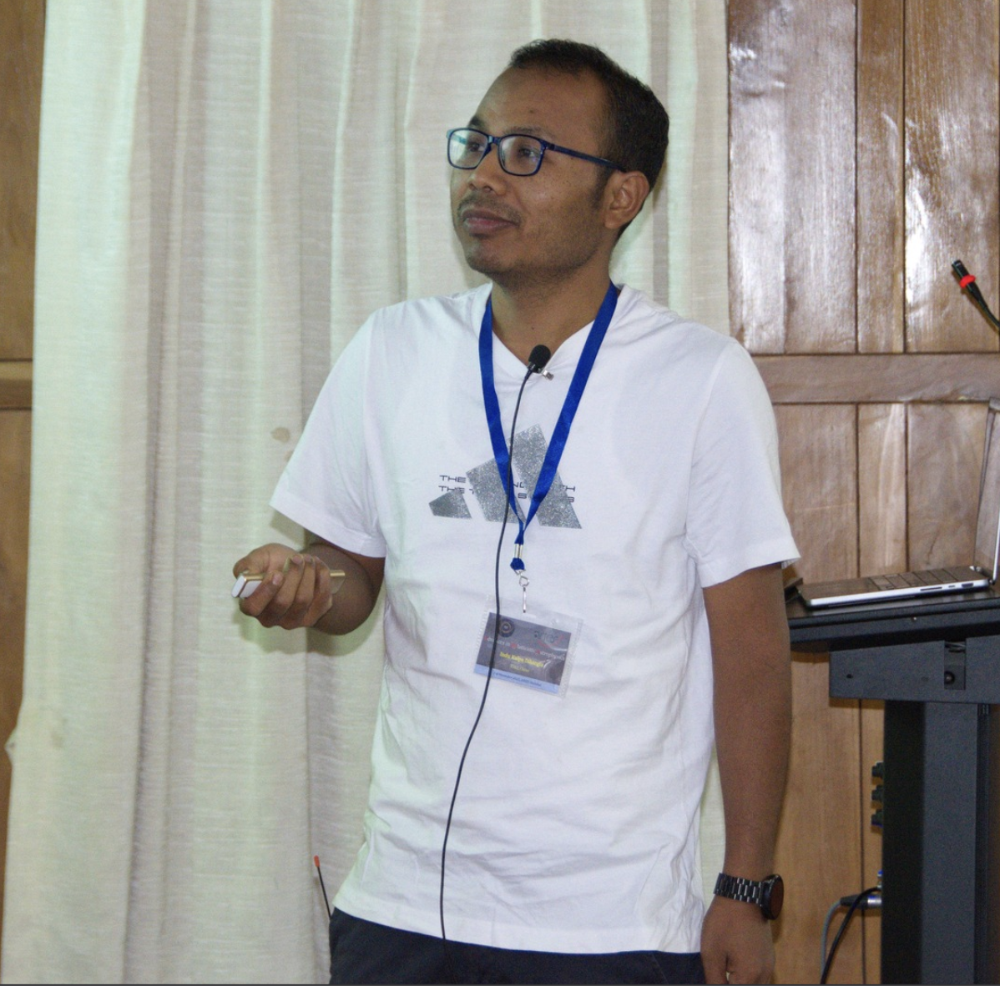
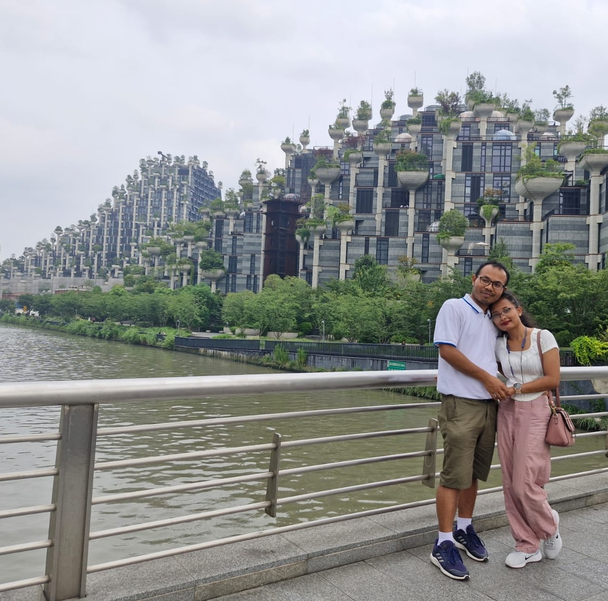

About Me
I am a computational astrophysicist working on black hole accretion, relativistic magnetohydrodynamics (GRMHD), quasi-periodic oscillations, and horizon-scale imaging. My research combines analytical models, numerical simulations, and observational diagnostics to study matter in strong gravitational fields.
Currently, I am an Associate Professor (Reserach) at Ningbo University. My work spans both supermassive and stellar-mass black holes, with applications ranging from Event Horizon Telescope observations to X-ray variability in compact-object systems.
Beyond research, I enjoy mentoring students, collaborating with researchers across different disciplines, and exploring the connections between theoretical models, numerical simulations, and observations. I am particularly interested in understanding how accretion flows generate observable signatures that can be used to probe the nature of compact objects and strong gravity.

I was born and raised in Dhemaji, Assam, India. I completed a Bachelor of Science in Physics (2007-2012) from DHSK College Dibrugarh, under Dibrugarh University. I obtained a Master of Science in Physics (2012-2014) and obtained a doctorate degree in Physics (2020, supervisor Prof. Santabrata Das) from the Department of Physics of the IIT Guwahati, India. Soon after my Ph.D. thesis submission, I moved as a postdoctoral Fellow to the IIT Indore in the discipline of astronomy astrophysics and space engineering (DAASE). I worked there from 2020-2022. Subsequently, I worked at ICTS-TIFR, Bengaluru as Academic Visitor and at Department of Physics, IISc Bangalore, Bengaluru as a Postdoctoral fellow during 2022-2023. After that I joined in international overseas talent programme at Shanghai Jiao Tong University - Tung Dao Lee Institute, TDLI prize postdoctoral Fellow from 2023-2025.

Beyond my academic work, I am deeply interested in environmental conservation and public engagement. One activity that I particularly enjoy is planting trees and contributing, in a small but meaningful way, to creating greener and healthier surroundings. I believe that scientific progress and environmental responsibility should go hand in hand, and I value opportunities to promote sustainability within both local communities and academic environments.
I am also passionate about sharing science, culture, and travel experiences with a broader audience through my YouTube channel, Jharna Kalpa . Through this platform, I document journeys across different regions, highlight historical and cultural heritage sites, and occasionally provide insights into scientific research and academic life. The channel serves as a bridge between professional research and the wider public, helping to make scientific thinking and exploration more accessible and engaging.
Whether through research, environmental activities, or digital outreach, I enjoy connecting with people from diverse backgrounds and sharing experiences that inspire curiosity, learning, and a deeper appreciation of both nature and science.
Research Summary
--
Refereed Publications
--
First Author Papers
Featured Simulations